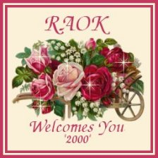
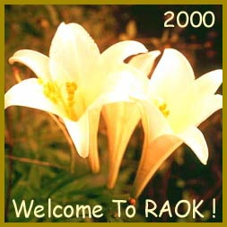
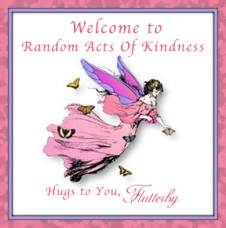

to my RAOK page.
Random Acts of Kindness.
The 6th June 2000 was one of the happiest days of my life.
That was the day I joined RAOK, and the warm
welcomes I received made me feel so good.
We all have some cross to bear, and we all
cope in different ways. For me, when I was feeling down
and very alone I would come here and spend hours
reading members dedication pages to RAOK, and visiting
their homepages. I thought they sounded so
friendly and caring, and I wanted to be part of this family.
But why would they want me as a member. I can't do
anything. I'm useless. Those were the thoughts that
stopped me from joining sooner. I could not have
been more wrong.
RAOK is not about what you can or can't do.
It's about whether you want to give just 5 minutes of
your time each day to sign a guestbook or send a card to
someone and put a smile on their face and brighten their day.
It's a small price to pay for the rewards you receive.
The feeling that you have actually done something nice
for someone is reward enough. Then you can add the
loving friendships made, and for me learning
that I'm not as useless as I've often thought are rewards
that can't be bought.
It doesn't matter who you are or what you do,
if you can spare 5 minutes of your time and want to
experience the warmth and kindness that RAOK is all
about then join today. I know you won't regret it.

Thank you Gramma Mimi.

Thank you Kodesmom.

Thank you FlutterBy.
On the 9th June,2000 I adopted this teddy.
I couldn't resist him. Don't you think he's
just so cute? *S*.
Please sign my guestbook and let me
know you were here.
Special thanks to Chilady for the use of her lovely graphics.